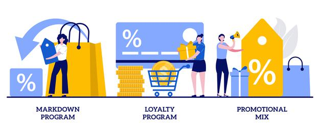

mesclas
La mezcla promocional, también conocida como mezcla de promoción, mezcla de comunicación, mix de promoción, o mix de comunicación, hace referencia al conjunto de elementos o variables que permiten la promoción del producto de una empresa.
Estos elementos o variables que componen la mezcla promocional son la venta directa, la promoción de ventas, las relaciones públicas, el marketing directo, y el merchandising.
Estrategias de empuje: son estrategias que buscan «empujar el producto» hacia el consumidor a través de actividades que incitan a los vendedores e intermediarios a vender el producto. Básicamente se dan a través de la venta personal y la promoción de ventas.
Estrategias de atracción: son estrategias que buscan hacer que la demanda logre «atraer el producto» a través de actividades que incitan al consumidor a comprar el producto. Básicamente se dan a través de la publicidad y la promoción de ventas.
Al momento de formular estrategias de promoción debemos tomar en cuenta los elementos que conforman la mezcla de marketing, y estos dos tipos de estrategias generales (si las estrategias que vamos a formular serán estrategias de empuje o de atracción). Pero además, debemos tomar en cuenta el consumidor que conforma nuestro mercado objetivo (por ejemplo, sus hábitos y costumbres), la competencia (por ejemplo, los medios publicitarios que utilizan y que mejores resultados les brindan), y los recursos y capacidades de nuestra empresa.

1. prospección o búsqueda de clientes potenciales: se busca clientes potenciales calificados (prospectos).
2. clasificación de prospectos: se clasifica a los clientes potenciales en orden de importancia.
3. preparación: se recolecta y estudia información útil sobre el prospecto, y se planifica la forma de abordarlo y tratarlo.
4. presentación: se presenta ante el prospecto.
5. argumentación: se presenta el producto al prospecto.
6. manejo de objeciones: se hace frente a las posibles objeciones del prospecto.
7. cierre de ventas: se trata de cerrar la venta.
8. seguimiento: se realizar un seguimiento y se mantiene comunicación con el cliente.
9. Relacionado: La venta personal
La mezcla de promoción está constituida por:
Promoción de Ventas
Fuerza de ventas o Venta personal
Publicidad
Relaciones Públicas
Comunicación interactiva o Marketing directo